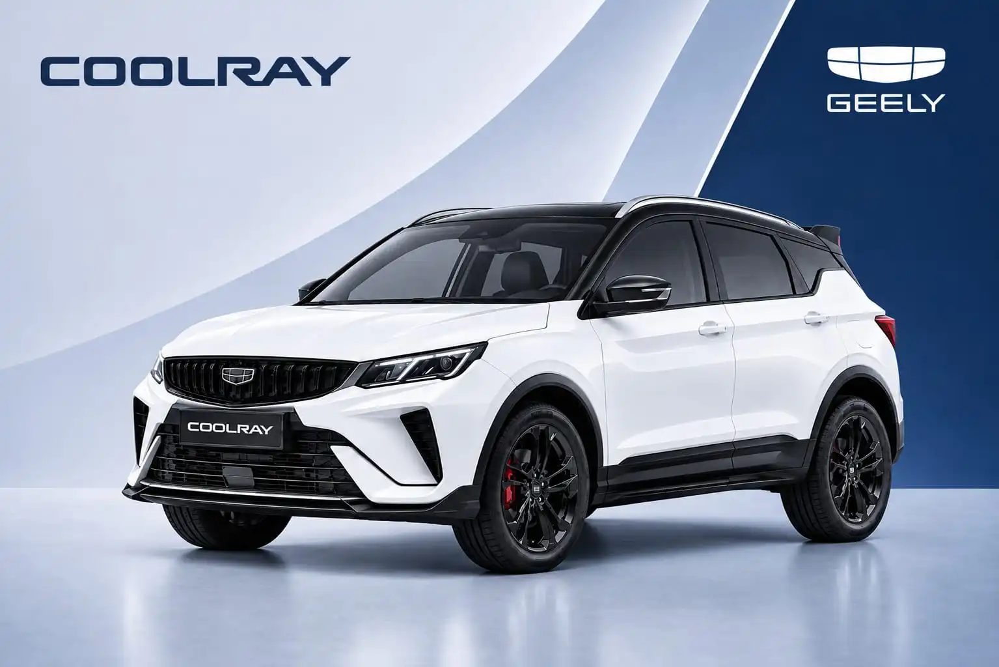

Geely CoolRay
Geely CoolRay adalah SUV kompak bermesin bensin turbo 1,5 liter dengan tenaga 174 PS dan torsi 290 Nm, mobil bensin pertama Geely Auto Indonesia. Dipadukan transmisi 7-percepatan dual-clutch, tampilannya sporty dan akselerasinya responsif. Tersedia dalam dua tipe: Standard dan Flagship.
Harga mulai Rp 333.000.000 (OTR Jakarta). Hubungi Romin untuk harga dan promo terbaru.
Spesifikasi Utama
Kenali performa dan dimensi Geely CoolRay. Bodi SUV yang kompak dengan ground clearance tinggi cocok untuk jalanan kota, sementara mesin turbo memberi tenaga yang besar di kelasnya.
Dimensi
Performa
Mesin dan Mode Berkendara
Fitur Unggulan
Mesin turbo bertenaga, transmisi cepat, dan tampilan sporty menjadi daya tarik utama CoolRay di segmen SUV kompak.
- Mesin bensin 1,5 liter turbo 4 silinder yang menghasilkan tenaga 174 PS dan torsi 290 Nm, termasuk besar di kelas SUV kompak.
- Transmisi otomatis dual-clutch 7-percepatan (7DCT) berteknologi wet clutch untuk perpindahan gigi yang cepat dan halus.
- Akselerasi 0–100 km/jam dalam 7,6 detik dan kecepatan maksimum 200 km/jam (klaim Geely).
- Empat mode berkendara, yaitu Eco, Comfort, Sport, dan Adaptive, yang bisa dipilih sesuai kondisi jalan dan gaya mengemudi.
- Desain sporty dengan tampilan agresif, dan telah dipasarkan di lebih dari 50 negara.
- Konektivitas Apple CarPlay dan Android Auto di kabin.
- Pilihan lima warna eksterior.
- Kaliper rem merah, spoiler berlogo S, dan cover spion hitam untuk tampilan lebih berkarakter. Flagship
Fitur Kenyamanan
Kabin modern dengan jok bergaya semi-bucket, pengisian daya nirkabel, dan fitur kepraktisan untuk berkendara sehari-hari.
- Jok bergaya semi-bucket yang menopang tubuh saat berkendara.
- Wireless charging untuk mengisi daya ponsel tanpa kabel.
- Rem parkir elektrik dan fitur auto hold yang memudahkan saat berhenti di lalu lintas padat.
- Tuas transmisi model column-type yang membuat area konsol tengah terasa lebih lega.
- Stop kontak daya dan sandaran tangan di baris depan dan belakang.
- Layar infotainment sentuh 10,25 inci dengan panel instrumen digital. Standard
- Layar infotainment sentuh besar 14,6 inci. Flagship
- Panoramic sunroof dan translucent sun visor untuk kabin yang lebih terang. Flagship
- Lampu ambient 72 warna dan jok kulit dua warna. Flagship
- Power tailgate untuk membuka dan menutup pintu bagasi secara elektrik. Flagship
Keselamatan
Perlindungan dasar lengkap tersedia di kedua tipe, dan tipe Flagship menambahkan sistem bantuan berkendara (ADAS) Level 2.
- 6 airbag untuk perlindungan penumpang.
- Electronic Stability Control (ESC) dan Traction Control System (TCS).
- Hill Start Assist dan Hill Descent Control untuk keamanan di tanjakan dan turunan.
- Tire Pressure Monitoring System (TPMS) untuk memantau tekanan ban.
- Dudukan kursi anak ISOFIX.
- Kamera 360° dan sensor parkir depan dan belakang. Standard
- Kamera panoramik 540° dengan tampilan transparan di bawah bodi mobil. Flagship
- ADAS Level 2 dengan 10 fungsi, termasuk Automatic Emergency Braking, Lane Keeping Assist, Traffic Jam Assist, dan Integrated Cruise Assist. Flagship
Perbedaan Geely CoolRay Standard dan Flagship
Kedua tipe memakai mesin dan transmisi yang sama, sehingga performanya identik. Perbedaannya ada pada ukuran velg, kelengkapan fitur, tampilan, dan material interior.
| Fitur | CoolRay Standard | CoolRay Flagship |
|---|---|---|
| Velg | Velg alloy (ukuran lebih kecil dari Flagship) | Velg alloy 18 inci, Sporty Black Edition |
| Warna bodi | Satu warna | Two-tone |
| Tampilan sporty | Standar | Kaliper rem merah, spoiler berlogo S, cover spion hitam |
| Interior | All Black | All Black atau Black & Burnt Red, jok kulit dua warna |
| Layar infotainment | 10,25 inci | 14,6 inci |
| Panoramic sunroof | Tidak ada | Ada, dengan translucent sun visor |
| Power tailgate | Tidak ada | Ada |
| Kamera | Kamera 360° | Kamera panoramik 540° |
| ADAS | Fungsi lebih terbatas | ADAS Level 2, 10 fungsi |
| Mesin dan transmisi | Sama: 1,5 L turbo 174 PS, torsi 290 Nm, transmisi 7DCT, penggerak roda depan | |
Harga Geely CoolRay Tiap Tipe
Pilih tipe sesuai kebutuhan dan anggaran Anda. Selisih harga kedua tipe sekitar Rp 44 juta.
Rp 333.000.000
Harga OTR Jakarta
- Mesin 1,5 L turbo 174 PS
- Kamera 360° dan 6 airbag
- Layar infotainment 10,25 inci
Rp 377.000.000
Harga OTR Jakarta
- Velg 18 inci, two-tone, panoramic sunroof
- ADAS Level 2 dan kamera 540°
- Layar 14,6 inci dan power tailgate
Harga on the road (OTR) Jakarta berdasarkan informasi Geely Auto Indonesia saat peluncuran. Harga, promo, dan program pembiayaan dapat berubah sewaktu-waktu. Hubungi Romin untuk penawaran terbaru.
Garansi
Pembelian Geely CoolRay dilengkapi garansi panjang untuk kendaraan, mesin, dan transmisi, serta gratis perawatan berkala.
Paket garansi dan perawatan ini merupakan program keuntungan pembelian dari Geely pada masa peluncuran. Program dan syarat dapat berubah. Tanyakan detail terbarunya kepada Romin.
Tertarik dengan Geely CoolRay?
Hubungi Romin untuk trade-in mobil lama Anda, jadwal test drive, atau konsultasi pembelian Geely CoolRay. Melayani Jakarta Utara, Selatan, Barat, Pusat, Timur, Pluit, Sunter, Bekasi, Tangerang, Cibubur, dan Cikarang.